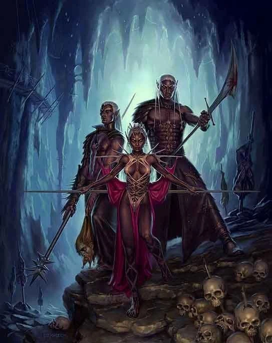
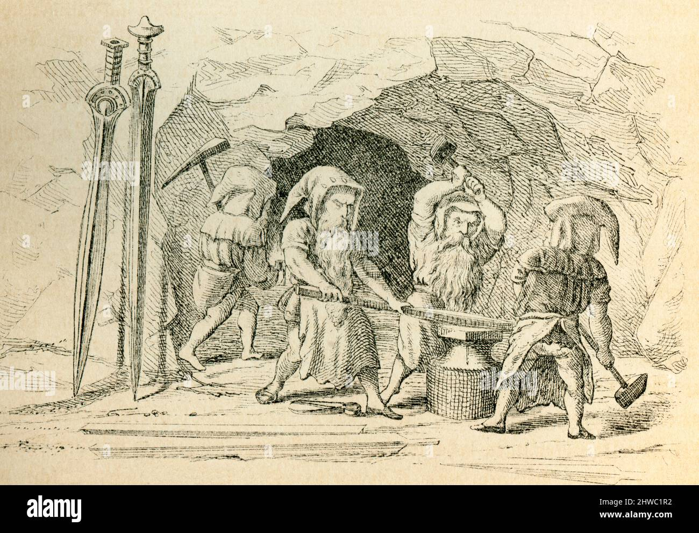
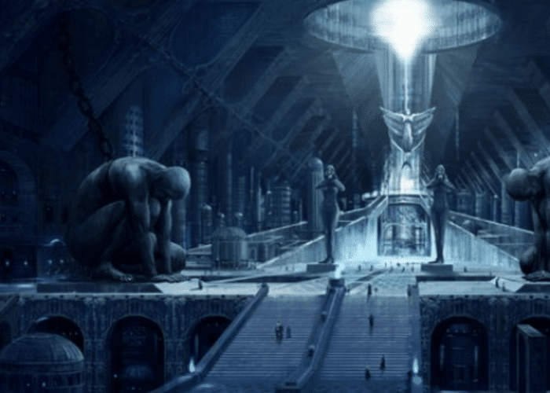

SvartalfheimSvartalfheim is de wereld van de Svartálfar, de donkere elfen, die meesters zijn in het smeden van magische voorwerpen. Ze wonen in ondergrondse grotten en zijn beroemd om hun vaardigheid in het maken van krachtige voorwerpen. |
 |
|  |
De bewoonersDe bewoners van Svartalfheim – of je ze nu zwarte elfen of dwergen noemt – zijn beroemd om hun ongelooflijke smidskunst. Zij maakten legendarische magische objecten zoals: Mjölnir, de hamer van Thor; Gungnir, de speer van Odin; Draupnir, een magische ring die zich vermenigvuldigt. Deze wezens worden niet vaak in de strijd gezien, maar hun creaties zijn essentieel voor de macht van de goden. |
WeetjeDe Svartálfar zijn nauw verbonden met de onderwereld en de geheimen die daarin schuilen. Ze werken vaak in de schaduw en creëren objecten die het lot van de goden en de stervelingen kunnen beïnvloeden. |
 |